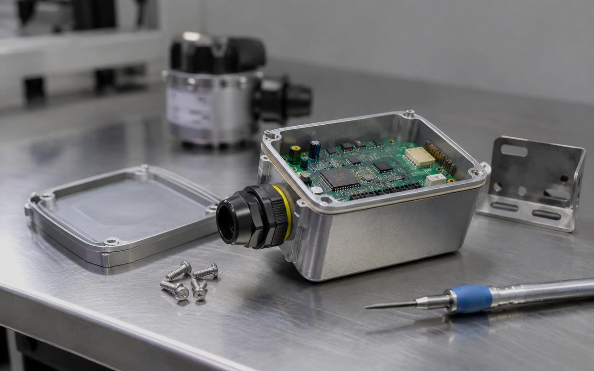
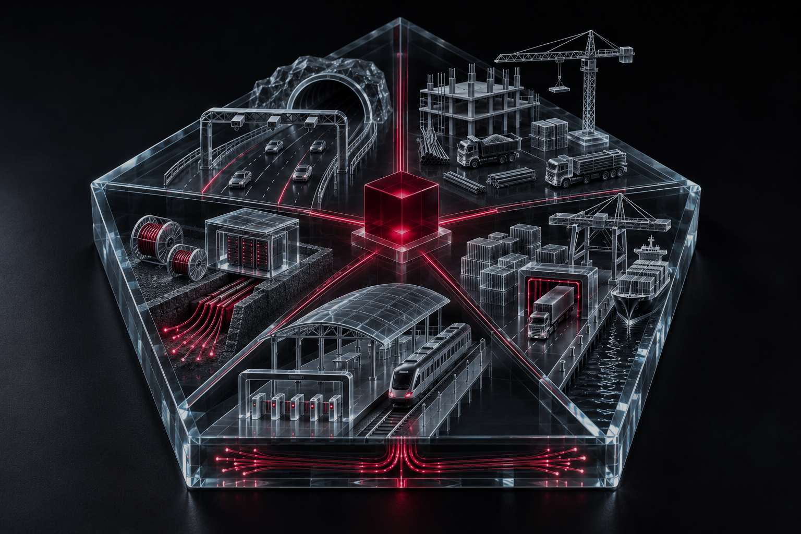

Agente de licitaciones
Revisa miles de procedimientos en ComprasMX, filtra los que encajan con el catálogo del cliente, analiza las bases y emite una recomendación Go / No-Go con alerta por correo.

Haz scroll para continuar

Potencia industrial y fronteriza.
El motor logístico y manufacturero.
El núcleo corporativo y de consumo.
La nueva frontera de desarrollo e infraestructura.
Se enfocan en encontrar el prospecto exacto, construir capital relacional a largo plazo y ejecutar operaciones.
Despliegan tecnología multisectorial. Dominan la movilidad, puertos, aeropuertos y automatización.

Identifican activos con alto potencial de disrupción y estructuran estrategias ágiles para llevarlos al mercado.
Revisa miles de procedimientos en ComprasMX, filtra los que encajan con el catálogo del cliente, analiza las bases y emite una recomendación Go / No-Go con alerta por correo.
A partir de una lista de cotización en Excel, encuentra dónde conseguir cada artículo, priorizando proveedores en México, y entrega las opciones con sus características para que compras decida.
Revaluación anual de inventarios para auditoría, con decenas de hojas y unidades: un proceso que tomaba a 4 personas un fin de semana completo hoy se genera de forma automática.
Cómo trabajamos
Tres pasos y resultados medibles desde el piloto. Tú pones el conocimiento de tu operación; nosotros, la tecnología.
TúNos cuentas qué proceso te quita más tiempo o te genera más errores, y compartes ejemplos reales.
4wardLo mapeamos, identificamos dónde la IA tiene más impacto y te proponemos alcance y beneficio esperado.
TúValidas los resultados con tu equipo.
4wardConstruimos un agente acotado con tus datos reales y medimos el antes y el después.
TúLo usas en el día a día.
4wardLo integramos a tus sistemas, damos soporte y lo afinamos con el uso.
Alianza · SICE
Peaje inteligente con inteligencia artificial, control de tráfico y monitoreo de túneles en tiempo real. Acompañamos a concesionarios y operadores desde la detección de la necesidad hasta la puesta en marcha.
Alianza · Vista Alegre
Materiales y logística pesada para obra e infraestructura. Aseguramos suministro continuo para que los proyectos no se detengan por falta de insumos.
Alianza · NUCTECH
Inspección no intrusiva de mercancías y control de alto flujo de pasajeros con escáneres de última generación, para aduanas, puertos, aeropuertos y transporte.
Alianza · ENTELAR
Fibra óptica de alta velocidad y redes Flexi WAN para infraestructura crítica: comunicaciones estables donde la operación no puede detenerse.
